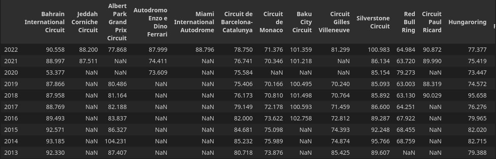
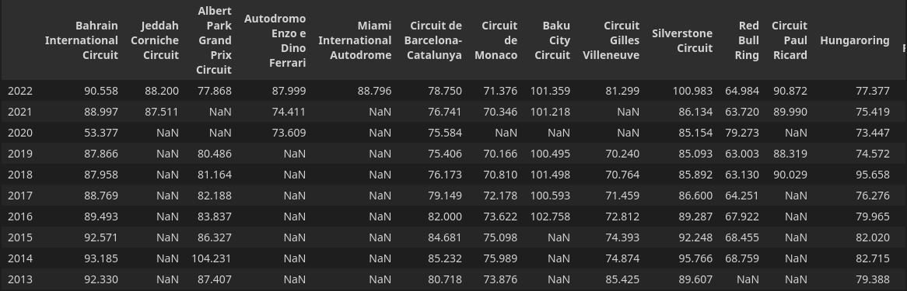

Final Project: F1 Cars
Question
Based off of fastest qualifying times for each year and each circuit raced at, what year of Formula One cars has the best performing (fastest) car on track?
Why do we care?
Known as the pinnacle of motorsport. Formula One is the most innovative motorsport in the world. The technology that is developed by the thousands of engineers for the ten teams on the grid trickles its way to our road cars. With a body and a monocoque made out of carbon fiber, titanium halo, V6 turbo-hybrid engines that are the most thermally efficient, aerodynamic features that produce 1,653 pounds of downforce, and more. From traction control and active suspension to buttons on the steering wheel and hybrid cars, numerous features have made their way from Formula cars to your road car that you drive every day.
 Formula One technology is a big venture to look at to help innovate the typical road cars we drive every day. Every year, the sporting regulations for vehicles and teams are altered, in small and big ways. Hence, it is good to look at what year(s) had the best cars to determine what year/generation has the best parts to use/draw inspiration from since they are more likely to be better performing.
Formula One technology is a big venture to look at to help innovate the typical road cars we drive every day. Every year, the sporting regulations for vehicles and teams are altered, in small and big ways. Hence, it is good to look at what year(s) had the best cars to determine what year/generation has the best parts to use/draw inspiration from since they are more likely to be better performing.
If we are an engineer for a new performance sports vehicle, we would want to select the best and highest performing parts for our car. It would be wise to towards Formula One cars and what technology or parts can be used in the sports vehicle.

Formula One technology is a big venture to look at to help innovate the typical road cars we drive every day. Every year, the sporting regulations for vehicles and teams are altered, in small and big ways. Hence, it is good to look at what year(s) had the best cars to determine what year/generation has the best parts to use/draw inspiration from since they are more likely to be better performing.If we are an engineer for a new performance sports vehicle, we would want to select the best and highest performing parts for our car. It would be wise to towards Formula One cars and what technology or parts can be used in the sports vehicle.
Approach to answering the question
I used the Ergast Developer API for my project and verified that data with results from https://www.formula1.com/en/results.html. I got all the years and the top qualifying lap times for each race within that year. I found the fastest lap time for every circuit and what year they came from. I counted the most occurring year in which there was the fastest qualifying lap at each circuit from 1994 to 2022.


Findings
Analysis
I found that in 2019 and 2020, most of the circuits had the fastest qualifying laps within those years. This makes sense as a lot of the lap records were set with cars from that generation/two years. Therefore, we would use parts and draw inspiration from the Formula One cars from those years. The reason that 2021 and 2022 did not have faster cars than 2019 and 2020 was because of the regulation changes and removal of a lot of the aerodynamic features for newer ones and the reprofiling of engines.
Validity
The only threat to validity is missing data or awkward data points. However, I combed through all the lap times and just I noticed one weird data point: 2020 Bahrain. This weird data point did not affect the final data since it was the fastest qualifying lap time at the circuit anyways. Aside from that, all the data matches up with results from https://www.formula1.com/en/results.html and the API is credible.